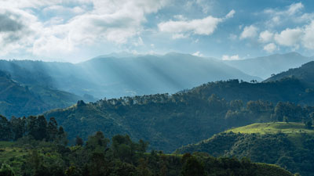

Franklin Breaks Record
 After the rain, as people and animals gently step back out into the world, is an amazing time for quiet beauty. There are certainly exceptions in this story, but the overwhelming nature of these photos changed the way I thought about this theme. The winds die down, the song of raindrops fades away, and we are left in a world that seems calmer than before.